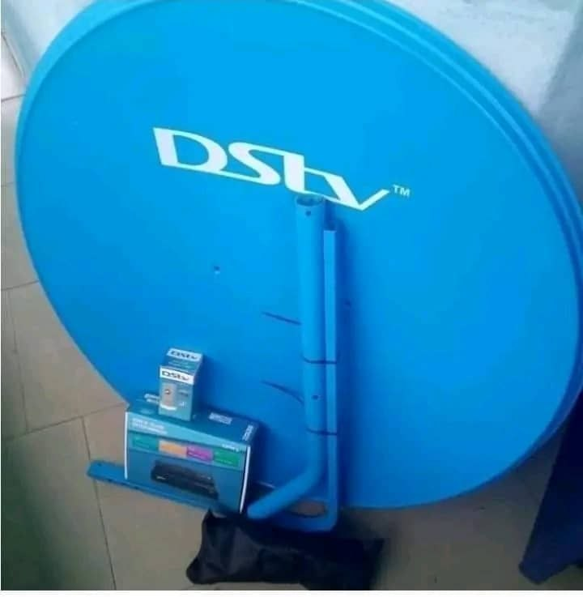

Electric Fencing
Energized fence systems, galvanized brackets, zone testing and tamper alerts for walls, compounds and estates.

Our services
We bring the right mix of security, energy and connectivity together for your property.
Energized fence systems, galvanized brackets, zone testing and tamper alerts for walls, compounds and estates.
Camera coverage, alarm panels, motion sensors and controls that give you a clear view and fast alerts.

Solar panels and power solutions sized to your actual needs, installed and commissioned by our team.

Accurate satellite dish alignment and dependable signal setup for television and data connections.

Live location, geofencing and vehicle activity tracking for transport, business and private fleets.
Sliding and swing gate automation built for convenient entry and better control of your premises.

Professional electrical wiring, fittings, troubleshooting and installation for residential and commercial properties.

Hands-on training in electrical and security-system installation for individuals and teams.

Supply of building materials and a wide range of electrical appliances for your project needs.